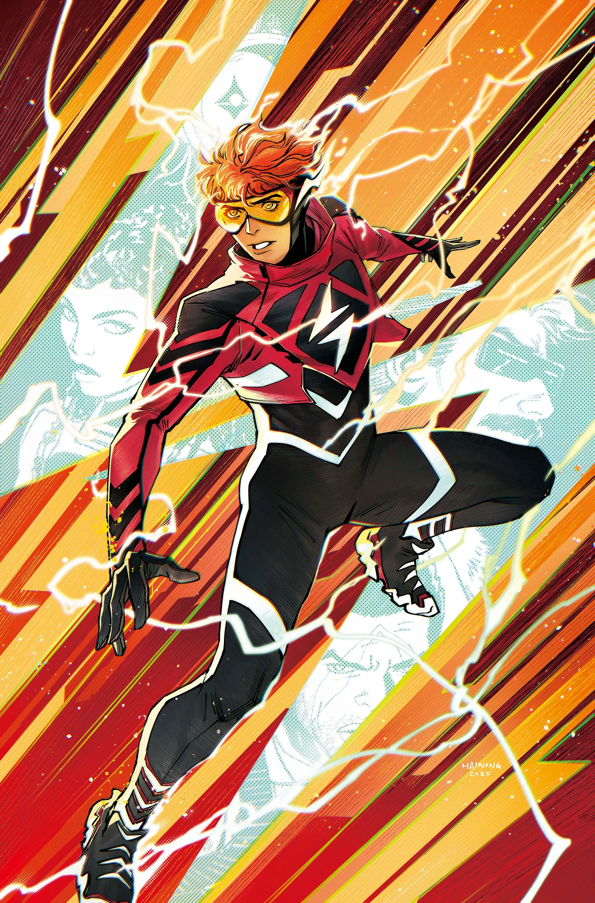

×

Nem todo herói nasce pronto — alguns precisam sobreviver ao próprio poder.

Wally West é um jovem marcado por instabilidade emocional e isolamento, vivendo em um mundo onde seus poderes surgem de forma caótica e difícil de controlar.
Sem mentores ou orientação, ele representa um herói em construção, lutando para entender sua própria natureza enquanto tenta sobreviver às consequências de seus poderes.
Wally cresceu como filho de um militar, mudando constantemente de cidade, o que o impediu de criar laços duradouros. Sua mãe, Mary West, sofria de transtornos mentais, e sua morte teve um impacto profundo em sua vida.
Durante um experimento secreto chamado "Project Olympus", conduzido pelo cientista Barry Allen, Wally foi exposto a uma energia desconhecida que transformou seu corpo em pura energia elétrica.
O acidente saiu do controle, resultando na morte de Barry e deixando Wally traumatizado e sem entender o que havia se tornado.
Sem controle de seus poderes, Wally foge, sendo perseguido por uma equipe especial conhecida como "Rogues". Durante esse período, ele enfrenta colapsos emocionais e surtos de energia.
Ao encontrar Grodd, uma criatura com habilidades telepáticas, Wally finalmente encontra alguém que o compreende. A partir desse momento, ele começa a aceitar seus poderes e sua nova identidade.
Grodd
Dr.Barry Allen
Eobard Thawne
Rogues